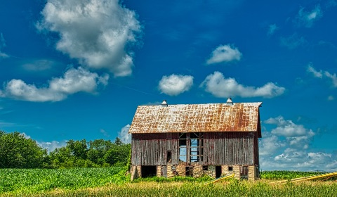

8月の探訪
-

北海道を旅行するのに最適な季節は8月をおいて他にない。
トウモロコシ畑はいよいよ隆盛を極め、今正にその旬を謳歌し
ようとしている。
そんな黄色の恵みを背に帯広から十数キロ北に車を走らせたと
ころ、その場所は見えてきた。
一面に広がる緑には、おおよそ商業的農業としての役割を全う
しているであろう空間は1ヘクタールも見つからない。
広大な庭の持ち主と、その隙間から覗く青空が伝える「夏」と
いう言葉の解釈は、きっとまだどの辞書にも載っていないだろう。 -

友人の誘いで訪れた印刷工場跡で見た階段はところどころ腐食
が進んでおり、歩みを進めるたびにそう長くないであろう踏み
板の寿命を感じさせる。
こういった場所に来るたびに懐かしい感覚を覚えてしまうのは
なぜだろう。手すりを掴んだ左手から香る酸化鉄は、逆上がり
ができずに半べそをかいていた時分を思い出させた。 -

長めに取った夏季休暇もいよいよ終わりに近づく某日、せっか
く軽井沢に来ているのだからと、少し足を伸ばして翡翠峠に訪
れた。
眼前に広がる一本道は、トンネルを抜けて感じた温度差も相ま
っていっそう胃のあたりをざわつかせる。
長らく手入れされていないであろう道だが、思った以上に歩み
を阻む草が少ない理由に想像を巡らせ、一人笑みが溢れる。
年を取るにつれ失うものは多くあれど、廃線を歩くという高揚
感は、皆いくつになっても消えないらしい。